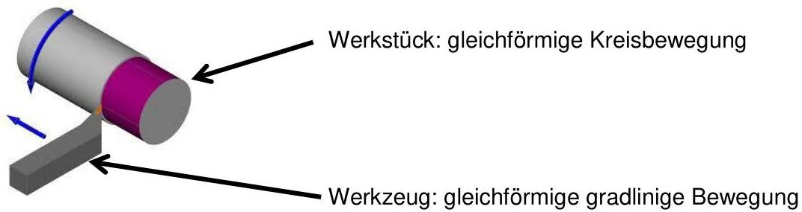
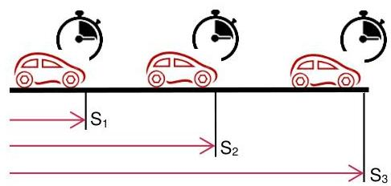
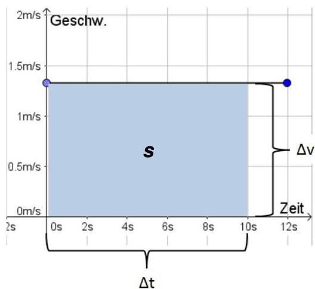

Lernziele & Kontext
- LZ 20: Gleichförmige geradlinige Bewegung berechnen (v = s/t, s = v·t, t = s/v) und Diagramme interpretieren (s–t, v–t).
- LZ 16: Resultate auf Plausibilität prüfen (Grössenordnung abschätzen), bevor man dem Taschenrechner vertraut.
Merksatz: Im s–t-Diagramm ist die Steigung die Geschwindigkeit. Im v–t-Diagramm ist die Fläche unter der Kurve der Weg.
Skript-Bezug



Formeln & Einheiten
Intern rechnet das Modul in SI-Basiseinheiten (m, s, m/s). Für die Anzeige kannst du m/s oder km/h wählen.
Kinematik-Rechner (mit Resultat-Schätzer)
Diagramm-Labor (SVG)
Bearbeite die Bewegung über Segmente mit konstanter Geschwindigkeit. Das v–t-Diagramm zeigt die Segmente direkt. Das s–t-Diagramm wird daraus berechnet.
s–t (Weg-Zeit-Diagramm)
—v–t (Geschwindigkeit-Zeit-Diagramm)
—Werte (Tabelle)
Self-Check A1 (5.2.1): Radfahrer
Nutze die Tabelle (Δs, Δt) und übernimm sie ins Diagramm. Dann beantworte die Fragen.
| Abschnitt | Δs [km] | Δt [min] |
|---|---|---|
| 1 | 1 | 3 |
| 2 | 0,5 | 3 |
| 3 | 1 | 1,5 |
| 4 | 0,5 | 4,5 |
2) In welchem Abschnitt ist v am grössten?
Self-Check A2 (5.2.1): Tabelle aus s–t-Diagramm
Trage die Zeiten in Minuten ein (Toleranz ±0,05 min). Dezimalkomma ist OK.
| Weg s [km] | Dein t [min] | Status |
|---|
Self-Check A3 (5.2.1): s–t → v–t
Lade das Beispiel „Stop & Wechsel“, wechsle bei Bedarf auf „s–t bearbeiten“ und beantworte die Fragen.
1) In welchem Intervall ist v = 0?
Self-Check B1 (5.2.2): Fussgänger
Gegeben: s = 24,8 km, v = 1,5 m/s. Gesucht: t in h, min, s.
Antwort als h / min / s (oder total in Sekunden)
Tipp: Zuerst alles in m und s umrechnen, dann rechnen. Danach in h/min/s zurück.
Self-Check B2 (5.2.2): Schwimmer
Gegeben: s = 2 km, t = 42 min. Gesucht: v. Du kannst km/h oder m/s angeben (oder beides).
Hinweis: Das Skript zeigt mehrere Varianten – hier prüfen wir die gängigen Einheiten km/h und m/s.